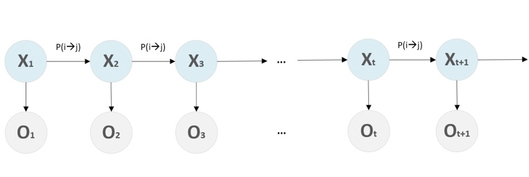

Tweet Sentiment with Hidden Markov Models
Instead of learning a decision boundary, learn how each kind of tweet is written: fit one hidden Markov model per sentiment, then ask which model makes a new tweet more likely.
- Generative classification
- Pattern Recognition course
- University of Tehran · 2020
- hmmlearn · TextBlob · NumPy

How the classifier works
A hidden Markov model explains a sequence of observed words with a sequence of unobserved states. Each state has its own vocabulary (the emission probabilities B), and states hand over to one another with transition probabilities A. Train one model on each class and you get two "writers" with different habits.
- TokeniseSplit each tweet into words with TextBlob and map every word to an index in a per-class vocabulary.
- Fit per classTrain a 20-state multinomial HMM on each class's tweets with Baum–Welch (EM).
- ScoreFor a new tweet, compute log P(words | HMMc) under both models with the forward algorithm.
- DecideAdd the log class prior and pick the larger: argmaxc log P(c) + log P(words | c).
The forward algorithm, step by step
Build a sequence and watch both models score it
InteractiveToy parameters for illustration: 2 hidden states and 3 word types per model, with the class priors from the real training split (71% / 29%). Click words to append them; click a token to remove it.
Each column is a time step. A node's value is αt(j) = P(o1..t, st=j), computed as Σi αt-1(i)·Aij·Bj(ot). Edge thickness shows how much each predecessor contributes. P(sequence) is the sum of the last column.
What happened, honestly
The word-level HMM lost to a constant guess. On the 5,000 training tweets the classifier reached 44.4% accuracy, while always predicting the larger class would score 71.1%.
The model is not wrong in principle; the setup starved it. Each class had its own vocabulary, so most words seen in one class were unknown to the other; multinomial emissions over thousands of words with 20 states and only 10 EM iterations are badly under-trained; and a tweet's likelihood shrinks with every extra word, which punishes the model whose vocabulary is larger.
What I would change: a shared vocabulary with add-one smoothing, length-normalised log-likelihoods, fewer states, and dense word embeddings with Gaussian emissions instead of raw word indices.